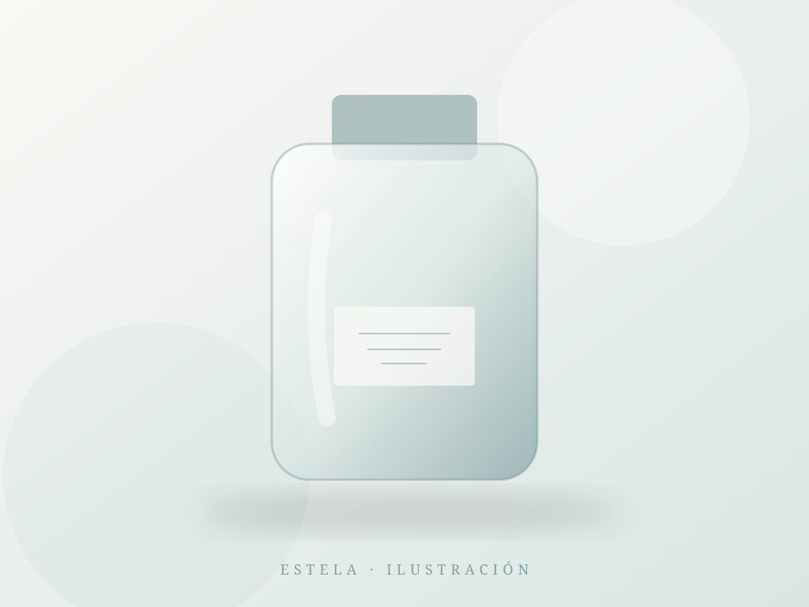

Selecciones
Cinco perfumes frescos para conocer estilos distintos
Del cítrico al acuático y al mineral: cinco formas reales de entender la frescura.

La frescura tiene varias caras
Un perfume fresco puede oler a cáscara de fruta, aire marino, hoja verde o ropa limpia. No todas esas sensaciones vienen de los mismos materiales ni evolucionan igual. Al comparar fragancias reales se aprende más que memorizando una lista de notas, porque cada composición coloca la frescura en un lugar distinto.
Tres maneras de empezar
CK One de Calvin Klein reúne bergamota, té verde y un acabado almizclado. Acqua di Giò Eau de Toilette de Giorgio Armani incorpora una faceta marina y cítricos mediterráneos. Chance Eau Tendre Eau de Toilette de Chanel usa pomelo y membrillo para construir un comienzo afrutado que se vuelve floral. Los tres pueden parecer ligeros, pero sus historias olfativas no son intercambiables.
Cuando aparece la madera
Sauvage Eau de Toilette de Dior muestra un diálogo entre bergamota y un fondo amaderado ambarado. Terre d’Hermès Eau de Toilette contrapone pomelo, cedro y una sensación mineral. Merece la pena olerlos a distintas horas: una salida luminosa no significa que toda la evolución tenga la misma textura.
Cómo organizar una prueba real
Empieza con dos perfumes sobre papel y lleva solo uno a la piel. Espera al menos media hora y anota si prefieres lo marino, lo verde, lo floral o lo amaderado. Las cinco fragancias se pueden localizar en la sección Descubre perfumes de ESTELA, donde aparecen sus notas destacadas y enlaces a las fichas oficiales.
Comentarios
Los comentarios se guardan únicamente en este navegador y no se comparten con otras personas.